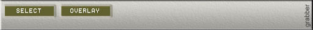

eleKtroniKa
help file
grabber module
capture
video stream from a desktop zone

inputs/outputs
1 video out
usage
select,
select the desktop zone
overlay, desactivate overlay
use it before lauching any
software that use overlay window such as windows media player, real player,...
warning, if you use overlay window in the video out module, don't use this
button
(lot's of video card
accept only one overlay aera)
copyright aestesis
2003
www.aestesis.org